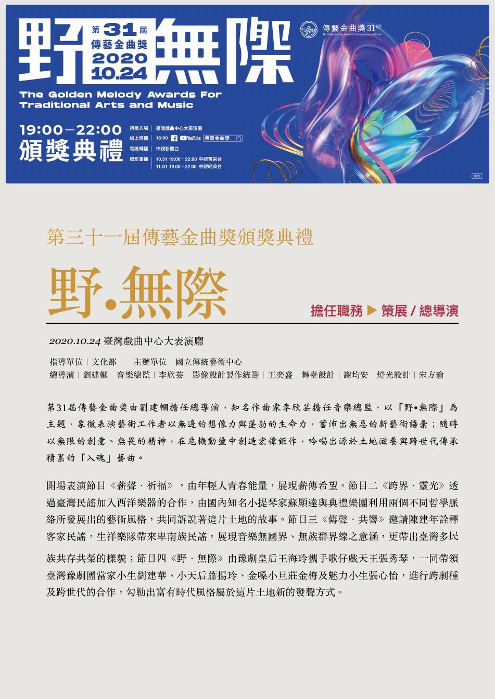
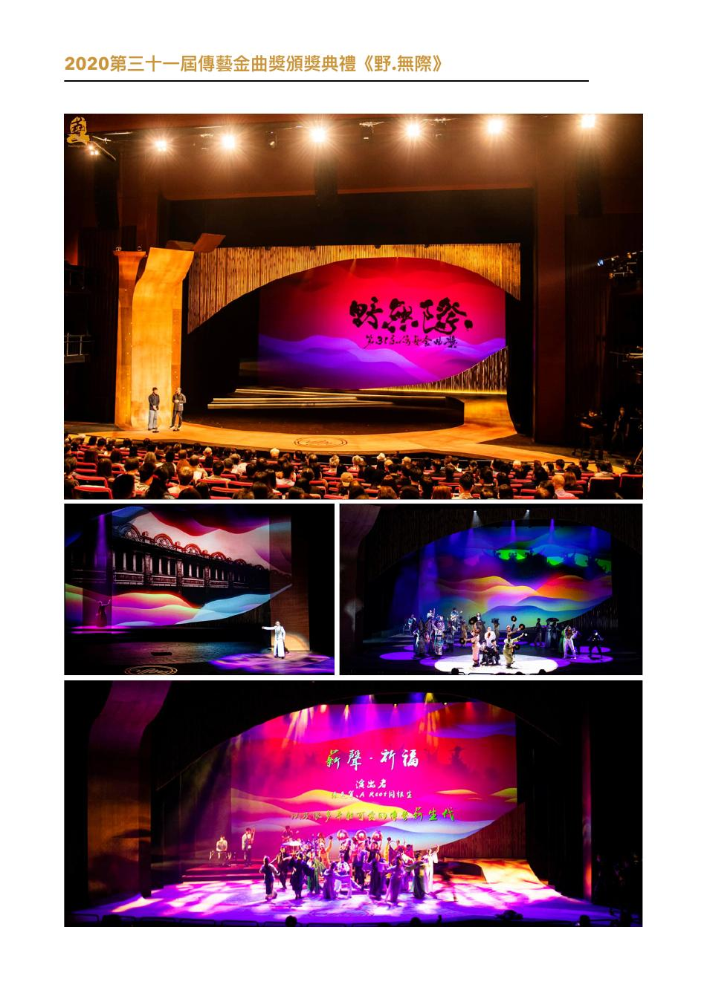

CURATION & INTERNATIONAL EXCHANGE
策展・大型展演・國際交流
國立傳統藝術中心 116 年「戲曲夢工場節目徵集計畫」策展人
第三屆「歌仔上青——全國歌仔曲調大賽」總決賽暨頒獎典禮總導演
國立傳統藝術中心 115 年「戲曲夢工場節目徵集計畫」策展人
第二屆「歌仔上青——全國歌仔曲調大賽」總決賽暨頒獎典禮總導演
心豐藝術節《竹夢歸人—「偶」回來了》總導演
《竹夢歸人》歸仁文化中心開幕鉅獻總導演
第三十一屆傳藝金曲獎頒獎典禮策展・總導演
全國中等學校運動會開幕典禮策展人・藝術總監
《慶成》台江文化中心開幕表演儀式總導演
全球港灣城市論壇開幕演出導演
全國運動會開幕典禮表演活動總導演
「眷村藝術家」文史計畫計畫主持人
「眷戀・舊部落的新風華」高雄眷村文化館試營運活動策展人
紐約 CUNY Segal Theater「酷兒劇作系列」《我們結婚好嗎？》劇作家・讀劇演出
日本立教大學異文化溝通學部課程受邀演講
「以武會友－台日武術／殺陣交流工作坊」主持
亞太傳統藝術節—新生若獅子劇團《白野弁十郎》來台演出合辦
台／日音樂交流講座：《鞍馬天狗》與津輕三味線主持
北京第四屆當代小劇場戲曲藝術節《蝴.蝶.效.應》領隊・編導・主演
《鞍馬天狗》取得日本大佛次郎紀念館授權並進行臺日文化交流改編創作
2020｜第三十一屆傳藝金曲獎《野・無際》
策展／總導演由劉建幗擔任總導演，作曲家李欣芸擔任音樂總監，以「野・無際」為主題，象徵表演藝術工作者以無邊想像力與蓬勃生命力，發展不受限的新藝術語彙；以創意與無畏精神，在危機與動盪中持續創造，吟唱土地滋養與跨世代傳承累積而成的「入魂」藝曲。
查看 策展／總導演作品頁

